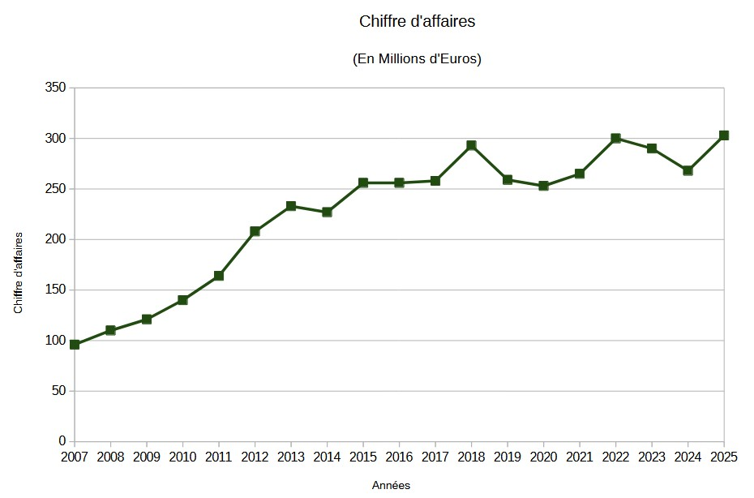
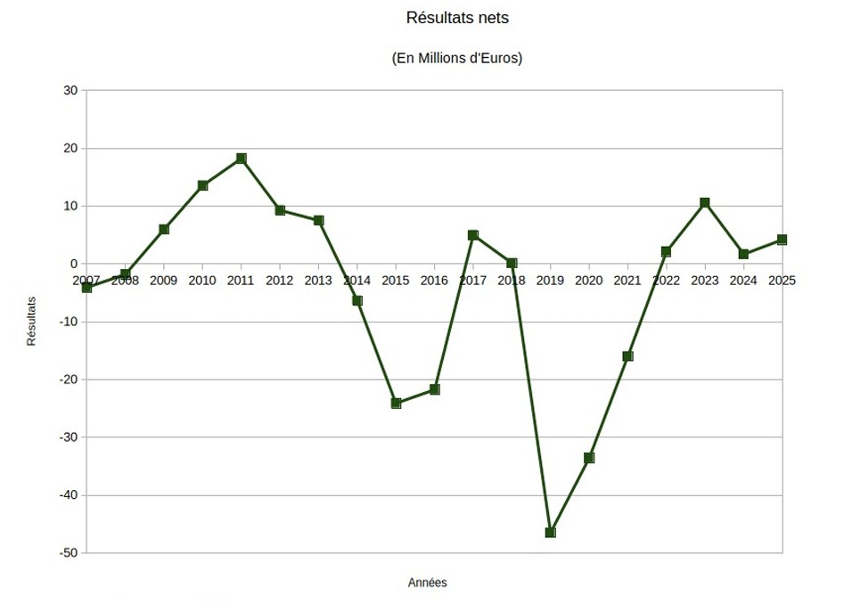
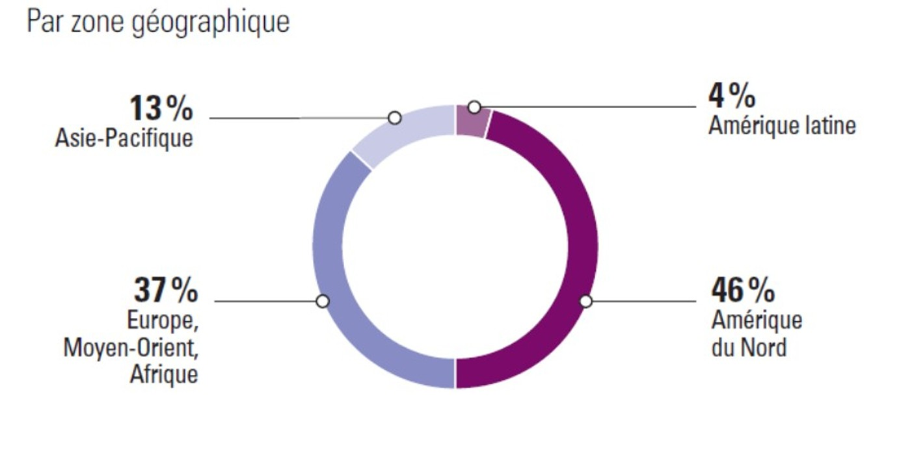
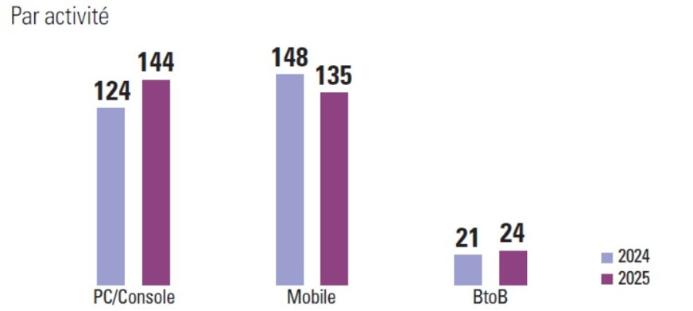

Présentation de l'économie de Gameloft.
Gameloft est une entreprise française spécialisée dans le développement et l’édition de jeux vidéo sur mobile, PC et consoles. En 2025, elle a réalisé un chiffre d’affaires de 303 millions d’euros, contre 293 millions en 2024, c'est une hausse de 4,2 %. Son activité se répartit principalement entre les jeux mobile ainsi que PC et console. Gameloft poursuit notamment son développement sur PC et consoles, qui représentent désormais plus de 47 % de son chiffre d’affaires. L’entreprise comptait également 2 366 salariés fin 2025.

LE CHIFFRE D'AFFAIRES
Depuis le boom économique de l'année 2007 pour Gameloft, le chiffre d'affaires de l'entreprise voit une croissance stable et régulière.
Cela est dû à une expansion massive vers des marchés extérieurs. Des initiative comme "COMBO!", un réseau publicitaire integré dans les jeux directement, aident à une croissance de l'entreprise.
Cette évolution du chiffre d'affaires indique une croissance globale ainsi qu'un impact grandissant sur la scène internationale.

LES RÉSULTATS NETS
Gameloft, en tant qu'entreprise, vise à atteindre le maximum de bénéfices possibles.
Malgré une période difficile entre les années 2013 et 2022, Gameloft est parvenue à retrouver des bénéfices dans un marché du jeu vidéo de plus en plus compétitif, cela est la preuve de la détermination de l'entreprise à garder son impact international et à répondre aux attentes des joueurs qui dédient leur temps à ses jeux.
Bien que le futur reste incertain, nous pouvons être confiant en la capacité de Gameloft à rester l'une des plus grandes entreprises de jeux vidéos francaises au niveau international.
Ces résultats que nous pouvons observer ici indiquent une bonne remontée ces dernières années.

AU NIVEAU INTERNATIONAL
Gameloft profite grandement de la clientèle internationale afin de promouvoir et vendre ses jeux.
La société dispose de beaucoup de marques populaires tout autour du globe, comme "Asphalt" ou "Dragon Mania Legends", de ce fait, elle répartit bien son chiffre d'affaires au niveau global.
Dans la représentation graphique ci-dessus, représentant le chiffre d'affaires au 31 décembre 2025, nous pouvons facilement constater l'expansion vers l'international;
le chiffre d'affaire même plus élevé en Amérique du Nord que nulle part ailleurs.

LES SECTEURS TECHNOLOGIQUES ET PLATEFORMES
En plus de la diversification au niveau géographique, Gameloft s'assure de maintenir une présence profitable sur de multiples plateformes.
Dans le graphique ci-dessus, nous pouvons justement constater cela, car il nous montre, toujours à la date de 31 décembre 2025, que le chiffre d'affaires de la société (ici exprimé en millions)
englobe autant les plateformes mobiles que les PC et consoles, à part quasi-égales.
Elle tire aussi son chiffre d'affaires, d'une manière plus moindre, de ses échanges avec d'autres entreprises, ou "Business-to-Business", ici abrévié en "BtoB".